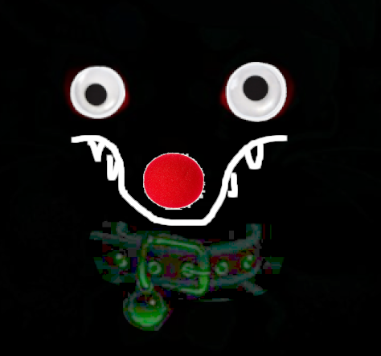

THIS GUY IS SO COOL!!

Name:
Captain Googly-Purr TLQWH (the eighty-fourth, build version 1.3)
AKA: Mistuh TLQWH/Entity TLQWH
Characteristics:
- It/When/Okay/Sure
- Black ambiguous feral canine?? base
- Void
- Googly Eyes (no eyebrows or eyelids; blinking is more felt than seen)
- Clown Nose (sometimes disappears because they forgets :[ )
- Crooked teeth
- Kind of vague braindead expression
- JPEG low-quality Collar
Descriptors
- Can have a form but the true form is not really having a form; it's more or less just being a face in the void. A goofy-ass void face that you can't tell is going to laugh, poop, or create more eyeballs to googly eye around.
- Loves vaguely clowning.
- Eats own brain cells whenever they spawn in.
- Cries from Digimon Movies and flowers that smell too nice, sometimes expresses this sorrow in surreal horror incantations or kicking sand really slowly.
- Probably drooling at any given time.
- Speaks in wasd stimming.
- Wants hugs and cuddles but also to eat its own arms.
Known Behaviors
- They enjoy transforming into animals but they often misunderstand the proportions. This leads to events such as becoming a butterfly and having its big nose and eyes become too heavy, causing it to slam its head into the ground. The ground hasn't really complained though.
- They are absolutely allergic to a specific time on Wednesday; however whichever time that is keeps shifting based on a mood ring they lost. Pretty sure it was a mood ring from a Lucky Charms box or a highly expensive fitbit; further confirmation pending. (Note: if the sneezing gets bad enough Wednesdays sometimes end up feeling like other days in that one specific timeslot.)
- Processes certain and very specific emotional energy as funny feeling noises that make them gassy OR indescribably sticky. Someone once called them a low quality render of a colon, in which Mr. TLQWH responded by emitting gas out of an unknown appendage. It smelled of dry Clorox wipes. (Footnote: They're not often gassy but when they are, nearby ant colonies often forage much more responsibly afterwards for the upcoming winter. On the other hand, the ants "don't appreciate the stickiness," said one ant reporter.)
- They have been observed frequently replaying GameBoy Camera minigames. It's unclear whether they're actually good at them or not. The louder the grunting gets, the more immersed they are. They lost the printing mechanism to attach to the game. (Rumors speculate that the mood ring had something to do with it.)
More Anecdotes
- A traffic sign once made them blush and get horny. They sometimes talks about it with a bush. They don't really mention which sign it was though.
- It's rumored they may be a kitsune that failed to load properly or maybe just an ugly duckling yokai or even just a poor Gimp software edit. When questioned about this, Mr. TLQWH shook a bit and dropped a packet of Pokemon cards on the floor. There were no rare cards in the packet.
- Once forgot they were real, so when they saw their mirror reflection mouth the words "you kinda got it tho" back at them, they started drooling so hard that entomologists have made new breakthroughs from the swarms that gathered to the location.
- They once sat on a balloon and popped it, then promptly stapled it to the wall to suspend it indefinitely. Sometimes they snicker at it, sometimes they just point at it blankly for up to 10 minutes and then walk away. It is unclear what color the balloon is.